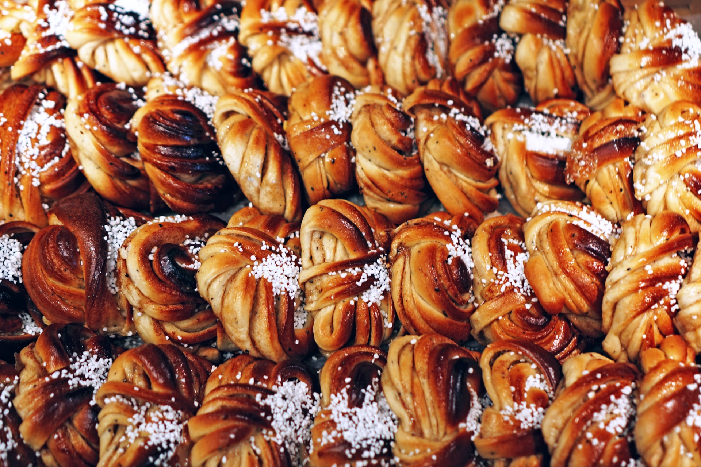

"However, I am certain where you should go to purchase your sweetrolls -- to Salmo the Baker in Chapel District! They are delicious."
- Allessia Ottus' Guide to Skingrad
"I could eat nothing but Salmo's baking for the rest of my life. That'd be fine with me."
- Erina Jeranus
"Salmo's baking is fantastic. And his sweetrolls are unbeatable."
- Mog gra-Mogakh
"I'll buy sweetrolls from Salmo the Baker any day. Once, I was carrying a sweetroll when three thugs attacked me. So, I took the sweetroll..."
- Glarthir
"I love walking by Salmo's place. The smell of his bread baking is amazing."
- Davide Surilie
"Try Salmo's sweetrolls. One taste, and you are in heaven...on top of the world, yes!"
- Captain Dion